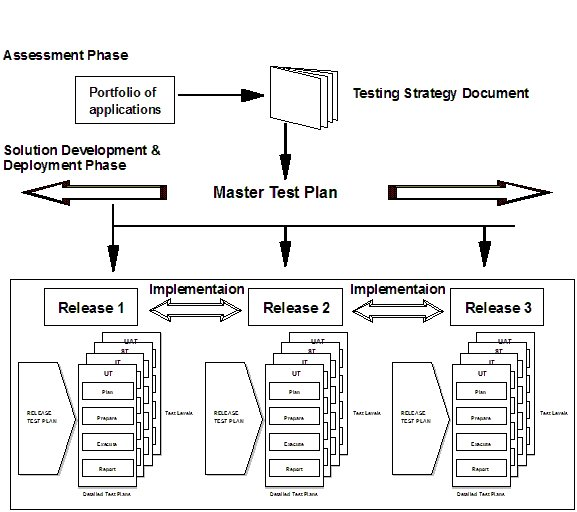
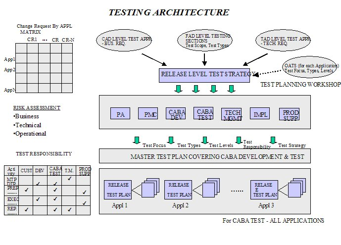

| Artifact: Test Strategy (ART 0561) |
 |
|
The purpose is to establish a common understanding and serve as a means of communicating the overall testing approach in order to:
|
| Main Description | This artifact outlines the approach to be used to ensure that the critical attributes of the system are tested adequately. This starts with a high-level description of the "what" needs to be tested. Statements are typically expressed in high-level terms of physical components and activities, resources (people and machines), and types and levels of testing. It will quite often only describe a generic approach and steps to be taken to ensure the quality of the product. In most situations, these are merely definitions of terms and terminology, used to establish a common understanding and lay the foundation to initiate the next step, which is test planning. |
|---|---|
| Brief Outline | This artifact includes, at a high level:
It is equally important to note that planning details are NOT included here. |
| Templates |
|---|
This artifact includes elements and information that are generic in nature. At this stage these could be generic to an industry, an application or a group of applications. No attempt is made to get specific at this time. This artifact should be developed early in the project lifecycle during start up time or, preferably, during proposal time. If a quality plan has been developed at the project level, that should provide direction for the testing strategy. If there is no project level quality plan, then the testing strategy, when completed, should be used as a reference point or baseline for defining the quality plan, including testing. The testing strategy should introduce the client to the concept of using facilitated joint planning sessions of all stake holder representatives to define the master test plan. This should be treated as part of the Organization Change Management activities, as many organizations know the importance of good and effective testing methods and practices. Very often, though, not many people know how to perform good and effective testing. As client involvement is key to the success of testing, any opportunity to stress its importance, and that of the team approach to testing, should be used. Test Strategy 1 (see Figure 1) is for the following scenario: The client has multiple portfolios of applications. For each portfolio, a test strategy is created which drives the master test plan for all Releases of that portfolio of applications. However, there is a Release Test Plan that is specific for the contents of each release. This Release Test Plan drives the detailed test plans for each level of testing for that release.  Figure 1: Test Strategy 1  Figure 2: Test Strategy 2 Test Strategy 2 (see Figure 2) is for a more complex situation: In this scenario, there are multiple applications that have changes implemented over multiple release levels, with development running in parallel. In order to keep track of risks and focus areas for testing, which are different for the different releases, testing approaches based on business, technical and operational perspectives are all fed into the common testing strategy. Once this is completed, the results are fed back to each application to direct it to focus on the right priorities for that application. This is a very complex test strategy that should not simply be copied and used. Seek expert advice and understand problems, issues, and factors involved before attempting to use a test strategy of this complexity. In situations where the project is very large, and multiple releases and multiple implementations may be running concurrently, the test strategy will be quite unique to that project. |
| Impact of not having | At the beginning of a project, it may be very difficult to embark on any test planning effort until details of the solution
start to emerge. To overcome this difficulty, a high-level test strategy is developed to understand the testing
implications and verify the feasibility of testing the solution. Without a clear understanding of the testing requirements,
the best solution alternative may not be selected. And without appropriate testing, even the best solution cannot be
implemented with a high degree of assurance that it will function as expected.
|
|
|---|---|---|
| Reasons for not needing | Usually for small projects or engagements, a test strategy work product may not always be created. If the project is one of
many similar projects or iterations, the test strategy is created once, and re-used in the subsequent projects.
|
|
| Representation Options | In certain testing cultures, the Test Strategy is considered an informal, casual work product, whereas in others it is highly formalized and often requires external signoff. As such, the format and content should be varied to meet the specific needs of the project or organization. As an alternative to formal documentation, you might choose to only record the elements of the Test Strategy as a set of informal planning notes, possibly maintained on an intranet Web site or whiteboard readily visible to, and accessible by, the test team. |
| Checklists | |
|---|---|
| Concepts | |
| Guidelines | |
| Supporting Materials | |
| Whitepapers | |
| Estimation Considerations |
| © Copyright IBM Corp. 1987, 2012 All Rights Reserved Property of IBM These materials are intended only for use as part of an IBM engagement |